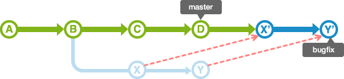

git安装
1 | $ npm install git -g |
git设定
可在.gitconfig文件直接修改或者使用config命令
1 | $ git config --global user.name "<用户名>" |
SSH
生成SSH:
1 | $ ssh-keygen -t rsa -C '上面的邮箱' |
将生成的公钥添加到你的github上后进行测试：
（gitee同理，网址改为git@gitee.com即可）
1 | $ ssh -T git@github.com |
初始化
新创建目录后把目录移动到本地Git数据库
1 | $ mkdir test |
若已存在的项目则直接git初始化
1 | $ git init |
创建README.md（是否创建视需求）
1 | $ touch README.md |
关联远程数据库
1 | $ git remote add <name> <url> |
查看
1 | $ git status //确认工作数和索引的状态 |
添加进索引区
1 | $ git add <file>.. //指定加入索引的文件 |
提交
1 | $ git commit -m "提交信息" //提交代码并发送信息 |
查看提交记录
1 | $ git log |
GUI查看提交记录
1 | $ gitk |
命令别名设置
例如commit设置为gc
1 | $ git config --global alias.gc commit |
HEAD
HEAD： 指的是现在使用中的分支的最后一次更新
HEAD~ ：指定HEAD之前的提交记录
HEAD^：指定那个为根目录
push
-u : 可以下次推送时省略分支名称
1 | $ git push -u origin branchName //同步新的分支到远程数据库 |
pull
获取远程数据库的变更日志，更新本地数据库（若本地数据有修改，也会同时提交到远程数据库）（多人作业）
repository省略时默认为origin
1 | $ git pull <repository> <refspec>... |
clone
克隆远程数据库（克隆的数据库的变更履历也会被复制）
1 | $ git clone <repository> <directory> |
branch
分支分为： merge分支 (一般为master）和Topic分支
可简单理解为主分支和其他分支
1 | $ git branch //查看git分支 |
checkout
1 | $ git checkout //切换分支 |
如果处于索引区的未提交内容及新添加文件，在checkckout时会移动到切换的新分支
如果所要切换的新分支的索引区也以及存在相同的修改文件，则会报错，此时解决方法：
①先提交后才能切换到新分支
②加数据存储到stash（临时存储）
合并
合并分支分为两种类型
merge
特点： 保持修改内容的历史记录，历史记录复杂
1 | $ git merge branchName |
fast-forward:
non fast-forward:
rebase
特点： 历史记录简单
操作：
topic分支更新merge分支的最新内容，rebase
1
$ git rebase master
merge分支导入topic分支内容，先rabase后merge
1
2
3
4
5
6$ git checkout topic
$ git rebase master
$ git add .
$ git rebase --continue
$ git checkout master
$ git merge topic
rebase的时候，修改冲突后的提交不是使用commit命令，而是执行rebase命令指定 —continue选项。若要取消rebase，指定 —abort选项。

标签
轻标签：添加名称
本地暂时或一次性使用
1 | $ git tag <tagname> //添加轻标签 |
注解标签：添加名称 添加注解 添加签名
一般发布时使用
1 | $ git tag -a <tagname> //添加注解标签 启动编辑区 |
1 | $ git tag -d <tagname> //删除标签 |
修改最近的提交
修改同一个分支最近的提交内容和注解
1 | $ git commit --amend |
主要作用：
* 添加最近提交时漏掉的档案
* 修改最近提交的注解
取消过去的提交
创建要否定的提交
1 | $ git revert HEAD |
主要作用：
- 安全地取消过去发布的提交
遗弃提交
1 | $ git reset --hard HEAD~~ |
模式（默认mixed）
| 模式名称 | HEAD的位置 | 索引 | 工作树 |
|---|---|---|---|
| soft | 修改 | 不修改 | 不修改 |
| mixed | 修改 | 修改 | 不修改 |
| hard | 修改 | 修改 | 修改 |
主要作用：
- 复原修改过的索引的状态(mixed)
- 彻底取消最近的提交(hard)
- 只取消提交(soft)
取消reset:
在reset之前的提交可以参照ORIG_HEAD。Reset错误的时候，在ORIG_HEAD上reset 就可以还原到reset前的状态。
1 | $ git reset --hard ORIG_HEAD |
提取提交
把topic中的某个提交移动到master
1 | $ git checkout master |
主要作用：
- 把弄错分支的提交移动到正确的地方
- 从其他分支复制指定的提交，然后导入到现在的分支
改写提交的历史记录
改写、替换、删除或合并提交
1 | $ git rebase -i HEAD~~ |
主要作用：
- 在push之前，重新输入正确的提交注解
- 清楚地汇合内容含义相同的提交。
- 添加最近提交时漏掉的档案
汇合分支上的提交，然后一同合并到分支
merge的特殊选项: squash
1 | $ git checkout master |
Git的标准注解：
第一行： 提交修改内容的摘要
第二行： 空行
第三行以后： 修改的理由
其他
- 让Git以彩色显示
1 | $ git config --global color.ui auto |
- 使用命令行(Git Bash)让含非ASCII字符的文件名正确显示
1 | $ git config --global core.quotepath off |
若在Windows使用命令行，您只能输入ASCII字符。所以，如果您的提交信息包含非ASCII字符，请不要使用-m选项，而要用外部编辑器输入。
外部编辑器必须能与字符编码UTF-8和换行码LF兼容。
1 | $ git config --global core.editor "\"[使用编辑区的路径]\"" |
注意点
不同类别的修改 (如：Bug修复和功能添加) 要尽量分开提交，以方便以后从历史记录里查找特定的修改内容。
常见问题
github无法访问或者访问速度慢
使用git clone出现下列错误：
1
2
3
4
5
6
7remote: Enumerating objects: 832, done.
remote: Counting objects: 100% (832/832), done.
remote: Compressing objects: 100% (484/484), done.
error: RPC failed; curl 56 OpenSSL SSL_read: Connection was reset, errno 10054
fatal: the remote end hung up unexpectedly
fatal: early EOF
fatal: index-pack failed
解决方法：
1 | git config http.sslVerify "false" |
管理不同的git账号（gitlab、github、gitee等）
全局name和email不设置
为不同的账号配置不同的ssh（生成SSH时用不同的文件名）
在SSH存放文件下添加config文件
config设置如下：
1
2
3
4
5
6
7
8
9
10
11
12
13# github
Host github.com
HostName github.com
PreferredAuthentications publickey
IdentityFile ~/.ssh/github_id_rsa
User yourusername
# gitee
Host gitee.com
HostName gitee.com
PreferredAuthentications publickey
IdentityFile ~/.ssh/id_rsa
User yourusername最后SSH文件夹如下：
name、email本地仓库局部设置(独立分开，不同的项目根据需要设置不同的远程仓库和账号)
声明
笔记撰写: GroovyKetchup
部分图片来源于：猴子都能懂的GIT入门(backlog)
更加详细的git教程可以访问：https://backlog.com/git-tutorial/cn/intro/intro1_1.html

...
...
This is copyright.